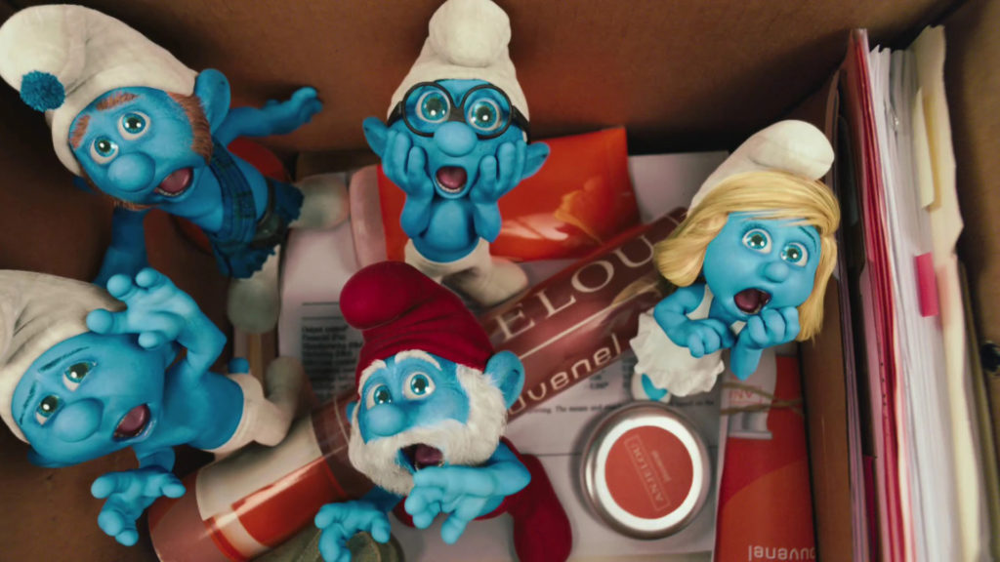

The Smurfs are Tiny Bluecreatures that live in Mushroom in a peaceful forest.
The Repeatedly try to outwit
- Papa Smurf
- Gargamel
- An Evil sorcerer and his Apprentice
- Scruple
- Mangy cat
- Azrael
The Smurfs,named for their village of personalities, inhabit a village of mushroom houses in an enchanted forest.
Created by:
Belgian cartoonist Peyo
Aired for 258 episodes with a total of 419 stories,excluding three cliffhanger episodes 7 specials.
What happens in the story
When an evil wizard Gargamel chases the Tiny Blue Smurfs out of their village
They tumble from their magical world New York City.
Video Link:
linktext